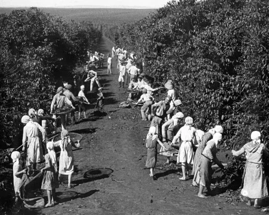

EA história da erva-mate no Paraná começou com os povos indígenas, que já consumiam a planta nativa muito antes da chegada dos europeus. O produto impulsionou a economia estadual por mais de um século, tornando-se o principal motor financeiro após a emancipação política em 1853.
Apresente o tema escolhido. Explique o que será mostrado no site, quem ou o que está sendo estudado e qual é a relação desse assunto com a arte e a cultura do Paraná.
Escreva aqui um título relacionado à história do tema
O uso da planta nativa Ilex paraguariensis começou com os povos indígenas Guaranis e Kaingangs. A exploração comercial e industrial no Paraná ganhou força no século XIX, impulsionando a emancipação da Província do Paraná em 1853.Desenvolvimento no Paraná: Curitiba e Paranaguá tornaram-se os eixos centrais. O mate era extraído nos pinheirais do planalto, transportado por tropeiros e escoado para países como Argentina e Uruguai.

Escreva aqui um título importância artística e cultural do tema
Explique por que esse tema é importante para a arte e para a cultura paranaense. Apresente suas principais características, obras, manifestações, influências ou contribuições. Comente também onde esse tema pode ser encontrado ou reconhecido atualmente.

Curiosidades
Curiosidade 1
Escreva uma curiosidade sobre o tema pesquisado.
Curiosidade 2
Escreva outra informação interessante.